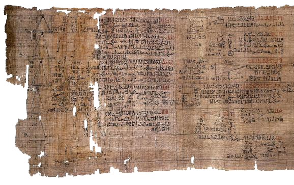
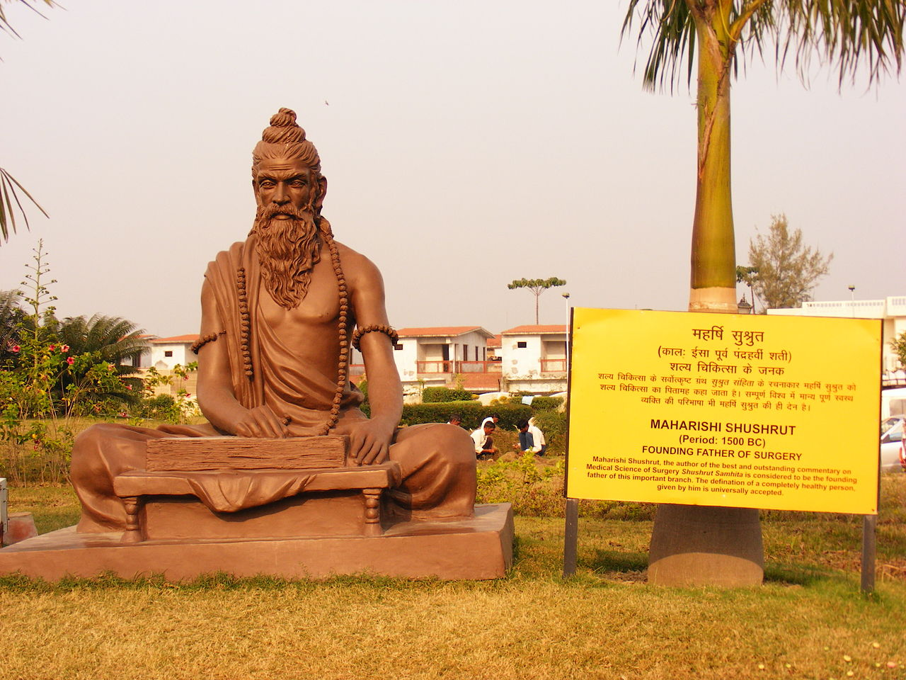
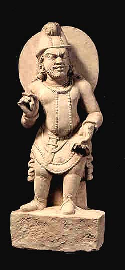
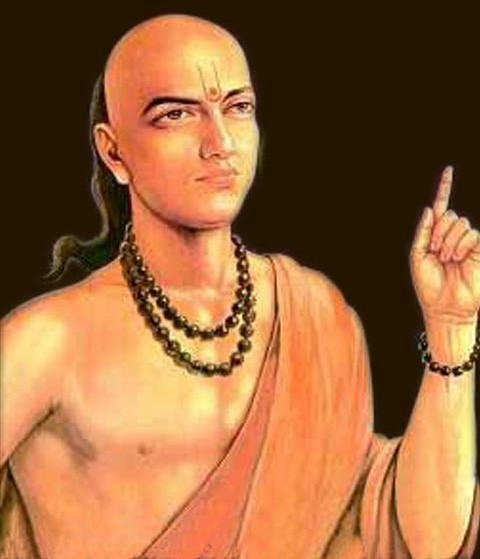
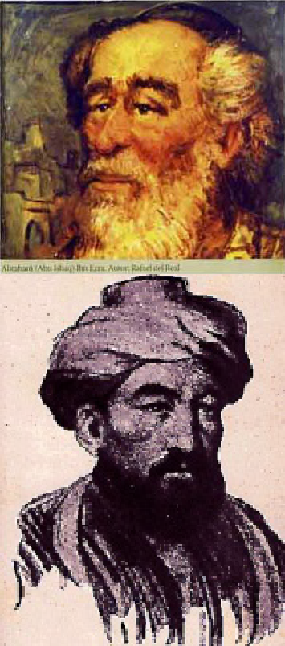
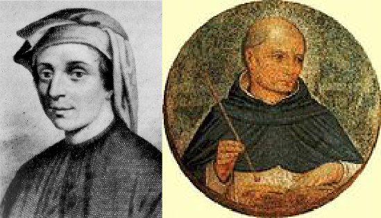
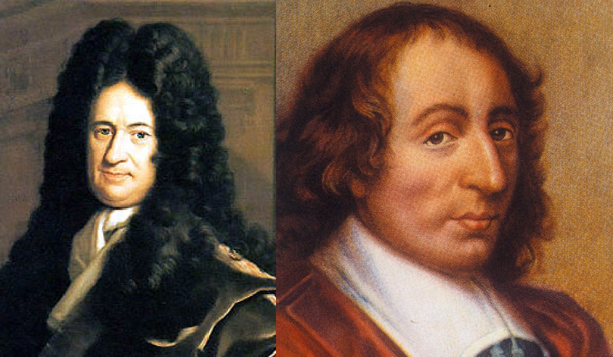

Se realiează prima legătură cu combinatorica în “Papirusul din Rhind”, o scriere cu caracter matematic din Egipt. În cadrul acesteia există o problemă (problema 79) care are la bază progresiile geometrice. Aceasta sună cam aşa: Există 7 case. Fiecare casă are 7 pisici. Fiecare pisică mănâncă 7 şoareci. Fiecare şoarece mănâncă 7 saci de grâu. Din fiecare sac de grâu se fac 7 hekat-e (unitate de măsură egipteană echivalentă cu un volum de 4.8 L) de făină. Câtă făină au salvat pisicile şi câte obiecte avem de fiecare fel şi în total?
Fizicianul Sushruta formulează în cartea “Sushruta Samhita”, o scriere hindusă pe subiectul chirurgiei, prima problemă de combinatorică. Autorul îşi punea următoarea problemă: Dacă există 6 gusturi, în câte moduri cineva ar putea simţi unul, două, trei... şase gusturi în acelaşi timp? El a venit şi cu un răspuns, şi anume 2^6-1 combinaţii (răspuns corect ce se verifică cu formula sumelor de combinări).
Următoarele idei legate de combinări vin de la scriitorul Pingala care se întreabă în cartea sa de prozodie, “Chandahsutra”, în câte moduri ar putea combina note lungi şi scurte într-o măsură de 6 silabe. De asemenea, el a descoperit că există 2^n măsuri care să conţină n silabe, iar când a plasat notele lungi şi scurte pe o măsură de 4 silabe a obsevat că exista o măsură numai cu note scurte, 4 cu 3 note scrute şi una lungă, 6 cu două note scurte şi două lungi, 4 cu o notă scurtă şi 3 lungi şi una doar cu note lungi, ceea ce este echivalent cu descoperirea coeficienţilor binomiali.
Matematicianul indian Mahāvīra inventează formulele de calcul pentru combinări şi permutări, deşi probabil că acestea le erau cunoscute deja matematicienilor din secolul VI î.Hr.
Un alt autor indian de prozodie, Hemacandra, studiază scrierile lui Pingala şi ajunge la o descoperire importantă. El a asociat notelor scurte lungimea 1 şi celor lungi lungimea 2, apoi a luat numerele naturale în ordine ca lungimi şi pentru fiecare a determinat numărul de măsuri care să aibă lungimea respectivă. Astfel, pentru 1 este o măsură (L), pentru 2 două măsuri (L,SS), pentru 3 3 măsuri (SSS, LS, SL), pentru 4 5 măsuri (SSL, LL, SLS, SSSS, LSS), adică, altfel spus, a descoperit numerele lui Fibonacci cu jumătate de secol înainte ca acestea să fie introduse în Europa de către Leonardo Fibonacci!
Filozoful şi astronomul Rabbi Abraham ibn Ezra a stabilit simetria coeficienţilor binomiali, o formulă de calculare recurentă a lor fiind descoperită de matematicianul Levi ben Gerson, în 1321.
Combinatorica pătrunde şi în Europa prin intermediul lui Leonardo Fibonacci şi Jordanus de Nemore. Acesta din urmă a fost primul care a aranjat coeficienţii binomiali într-un triunghi care va urma a fi cunoscut sub numele de Triunghiul lui Pascal.
Putem spune că a apărut combinatorica modernă, “tăticii” ei fiind Blaise Pascal şi Gottfried Wilhelm von Leibniz. Pascal este cel care a studiat şi a descoperit cele mai multe proprietăţi ale triunghiului alcătuit din coeficienţi binomiali, de aceea triunghiul a fost denumit după el. Leibniz este cel care introduce ideea de partiţii, adică moduri de a împărţi o mulţime în submulţimi a căror sumă de cardinale este cardinalul mulţimii şi care reunite dau mulţimea iniţială. Folosindu-se de cercetările celor doi, Abraham De Moivre reuşeste să descopere un mod de a aproxima coeficienţi binomiali sau factoriale mari, dar şi funcţiile generatoare.
